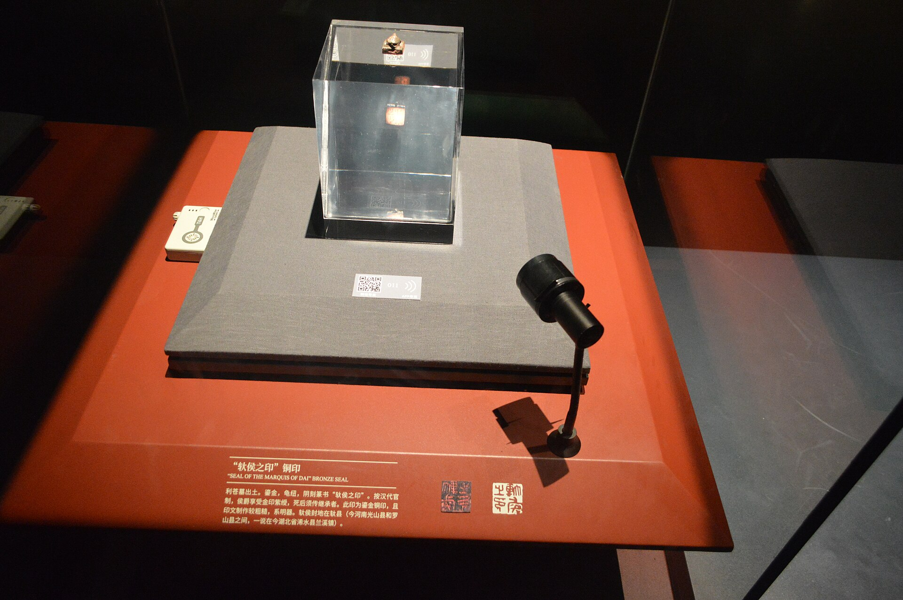

第 15 章
龙亭侯的印
元初五年九月庚午，尚书台签发、加盖少府印的文书送抵尚方署。这份记录着“尚方诸作耗材及呈样规程”的簿册，本不会引起波澜——直到捧着它的中常侍踏入署门。东院正传来试剑的锤击声，而蔡伦在

汉代龙亭侯印玺（示意）
图源：维基共享资源 · Huangdan2060 · CC0
西院纸坊里，指尖刚抚过一批新成楮皮纸的纤维。
蔡伦的手指停在纸面上。中常侍。不是少府丞，不是尚书令史，不是任何一个外朝官员。是中常侍——内廷宦官序列中仅次于大长秋的品秩，秩比二千石，掌侍左右、赞导内事、顾问应对。这样一个人物亲自来尚方署，只有一种可能。
他直起身，用湿布擦净手指上的纸浆残渣，整了整袍袖。走出纸坊时，阳光正从西边斜照过来，将尚方署的庭院切割成明暗两半。中常侍李润站在明处，身后跟着四名小黄门，其中一人手中捧着一卷用黄绫包裹的竹简。
竹简——不是纸张。这个细节没有逃过蔡伦的眼睛。尽管纸张在尚书台的日常文书中已经逐步取代了竹简，但最重要的诏令仍然刻写在竹简上，用黄绫包裹，以丝绳捆扎。制度不会轻易改变它的核心仪式。
“蔡伦接诏。”李润的声音不高，却带着内廷宦官特有的那种克制，每一个字都经过精确称量。
蔡伦跪伏在地。庭院里的工匠们早已停下手中的活计，跪成一片。铁锤声停了，风箱声停了，只剩下秋风吹过晾纸架上那些半干纸张时发出的轻微哗响，像是什么东西正在翻页。
诏书的内容不长。李润读得很慢，用的是宣读诏命时特有的抑扬顿挫的调子。蔡伦听见自己的名字，听见“尚方令”三个字，听见“监作秘剑及诸器械，莫不精工坚密，为后世法”——这句评价他已经在上个月少府呈送皇帝的考功奏报中见过，但此刻从诏书里念出来，分量完全不同。然后他听见了那两个字。封侯。龙亭侯。食邑三百户。
李润读完最后一句，将诏书合拢，俯身双手递给蔡伦。蔡伦以额触地，行完了全套接诏的礼仪，然后才伸出双手接住那卷黄绫包裹的竹简。竹简比看上去更重，竹片的边缘在黄绫下硌着他的掌心。
他站起来，与李润对视了一眼。李润的脸上没有任何多余的表情——一个在中常侍位置上坐了十二年的人，早已学会不让面部肌肉泄露任何信息。但他开口时，声音里有一丝几乎不可察觉的犹豫。
“敬仲，”他叫了蔡伦的字，而不是官衔，“恭喜。”
蔡伦微微低头，算是回应。他知道李润这句“恭喜”里包含着什么。不是祝福，不是善意。李润是郑众的人——大长秋郑众，内廷宦官序列的最高品秩，从章帝时代起就深居禁中，掌控着内廷与皇帝之间的信息通道。蔡伦虽然在宫中近三十年，但从未真正进入郑众的核心圈子。他的位置一直在外廷与内廷的交界处：尚方署隶属于少府，少府又对尚书台负责。这种制度上的模糊地带给了他活动的空间，也让他始终处于一种微妙的孤立状态。
现在，一封诏书改变了这个格局。龙亭侯。爵位。列侯。这意味着蔡伦的名字从此不再仅仅出现在少府的属吏名册上，而是被写入了外朝的爵位序列。东汉的列侯制度继承自西汉，分为县侯、乡侯、亭侯三级。龙亭侯属于亭侯，是最低一级的列侯，但即便如此，它仍然是列侯——拥有食邑、金印紫绶、拥有“侯”这个称号的权利。更重要的是，封侯意味着蔡伦从“内廷宦官”这个单一身份中跨出了一步，进入了“外朝功臣”的序列。这正是问题所在。
李润走后，蔡伦回到公房，将诏书放在案上。他没有立刻打开黄绫，而是盯着那卷竹简看了很长时间。窗外传来工匠们重新开工的声音，铁锤声小心翼翼地响起，像是怕惊扰了什么。尚方署出了一个列侯，这是整个尚方署的荣耀。但蔡伦知道，这份荣耀在宫中的其他角落会被解读成什么。
东汉宦官封侯并非没有先例。光武帝时期就有人以“豫谋定策”之功封侯；和帝永元年间，大长秋郑众本人也因定策之功封鄛乡侯。但那些封侯的理由都是政治性的——定策、拥立、诛除外戚。那些功劳属于权力的核心游戏，属于皇帝与权臣之间的生死博弈。封侯是对政治忠诚的最高奖赏，是对“站对了位置”的回报。而蔡伦的封侯理由是什么？“监作秘剑及诸器械，莫不精工坚密，为后世法。”
这是工艺。这是技术。这是将铁锤敲在铁砧上的声音，是将麻皮与树皮混在一起舂捣的耐心，是反复试验配方比例、记录晾晒时间、检验纸张吸墨性的日常劳作。这些东西，在东汉的爵位传统中从未有过先例。
蔡伦的手指按在黄绫上，感觉到竹简的硬度透过绫布传来。他忽然想起三十多年前在耒阳铁官作坊里的一个下午。那时他还是一个十几岁的少年，刚刚被选入铁官做学徒，每日的工作是将铁矿石砸碎、分类、送入冶炉。有一天，铁官丞——一个姓郑的老工匠——在检查一批新铸的犁铧时，发现其中一件的刃口淬火不均匀，便当着所有学徒的面将那件犁铧摔在地上，说了一句话。那句话蔡伦记了三十多年，此刻忽然又在耳边响起。
“手艺人的功名，不在纸上。”
郑铁官的意思是，工匠的价值只能通过产品来证明，不可能进入朝廷的功名序列。在东汉的制度设计中，工匠属于“百工”，是“执技以事上者”，他们的名字不会出现在举孝廉的名册上，不会出现在郎署的候选名单上，更不可能出现在列侯的封赏诏书上。而现在，皇帝用一封诏书打破了这个规则。
蔡伦打开黄绫，展开诏书。竹简上的字迹是尚书台令史的手笔，工整而冷淡。他将诏书从头到尾读了三遍，然后停在那一句话上——“监作秘剑及诸器械，莫不精工坚密，为后世法”。
他注意到这句话里没有提到造纸术。不是“造纸以代简帛”，不是“树皮麻头化为方絮”，而是“秘剑及诸器械”——那些他作为尚方令监管制造的兵器、礼器、宫廷用具。造纸术的成果已经在尚书台的日常行政中产生了实际影响，但在诏书里，它被归入了“诸器械”这个笼统的范畴中。这不是疏忽，这是刻意的措辞选择。据《后汉书·宦者列传》记载，蔡伦“监作秘剑及诸器械，莫不精工坚密，为后世法”，而造纸术的改进——用树皮、破布、麻头和鱼网等廉价之物造纸——则是在此之后才向皇帝报告的。
如果诏书明确以造纸术作为封侯理由，就等于公开承认一项工艺改良具有与军功同等的制度价值，这会引发士大夫集团的强烈反弹。而如果将造纸术隐藏在“诸器械”的范畴中，将封侯理由表述为对尚方令整体工作的高度肯定，就可以在事实上给予奖赏的同时，在名义上避免与爵位传统直接冲突。这是典型的东汉宫廷政治操作——实质推进，名义妥协。
他放下诏书，走到窗前。庭院里的晾纸架上，那些楮皮纸在秋风中轻轻摆动，像是一排排白色的旗帜。九年了。从永元八年他第一次在石臼房里开始混舂麻皮与旧布，到元兴元年正式向皇帝呈报造纸成果，再到今年——元初元年——纸张从尚方署的试验品变成了尚书台日常行政的载体。据《后汉书》记载，元兴元年（105年），蔡伦将其改良造纸工艺的成果上奏天子，天子对蔡伦的才干大为嘉许，并下令将这项改进后的造纸工艺推广至各地方。九年里，他经历了多少次配方失败、多少次材料短缺、多少次来自各方的质疑与嘲笑，已经记不清了。但他清楚地记得每一次将纸样呈送给皇帝时，皇帝眼中那种专注而好奇的神情。
和帝刘肇今年二十六岁，从十岁登基算起，已经在位十六年。这十六年里，他从一个被窦太后和外戚窦宪架空的小皇帝，成长为逐步收回权力的青年君主。永元四年，他借助中常侍郑众的力量诛杀了窦宪，那一年他十四岁。从那以后，他对权力运作的理解就不再是一个被保护在深宫中的少年天子的理解，而是一个在刀尖上走过的人的理解。蔡伦封侯这件事，在和帝的棋盘上是一步什么样的棋？
窗外的铁锤声忽然停了。蔡伦看见东院的工匠们正在收工，日光已经偏西，尚方署的庭院正在一寸一寸地沉入阴影。他转过身，重新走到案前，拿起笔，开始起草一封谢表。
谢表的格式是固定的——自谦、感恩、承诺继续尽职。但蔡伦在写到“臣本微贱，出自百工”这一句时，笔尖在竹简上停顿了片刻。这句话是事实。他的父亲是耒阳铁官的一名冶铁工匠，他的名字“伦”字在汉代并不常见，很可能只是一个按辈分取的名字，没有任何经学典故的出处。他没有家学渊源，没有门阀背景，甚至没有完整的男性身体——一个十三岁入宫的宦官，在士大夫眼中连“人”的完整性都不具备。这样一个人的名字，现在被写进了列侯的名册。
这不是荣耀。这是危险。
蔡伦继续写下去。谢表的结尾，他加了一句话：“臣请仍领尚方令职，督造诸器械，以报圣恩。”在东汉的制度惯例中，封侯通常意味着获得更高的官职或闲职，不再从事原来的具体工作。但蔡伦几乎没有任何犹豫就做出了这个选择。他知道，他的侯爵之位不是靠军功、不是靠定策、不是靠任何一次性的政治行动换来的。它的唯一依据是他在尚方署的日常劳作，是他对每一道工序的熟悉，是他在石臼房、冶铸间、纸坊中度过的无数个日夜。如果离开了尚方令的位置，他的侯爵就变成了一座空中楼阁——没有地基，没有支撑，任何一阵政治风浪都可以将它吹倒。
更重要的是，他需要留在工坊里，因为工艺本身还没有完成。纸张虽然在尚书台得到了初步应用，但各郡县官府仍然在使用竹简和缣帛。装订成册的方案他已经写了一半，但每推进一步都会触碰到档案管理、文书格式、校勘标准等一系列制度问题。如果他此刻离开尚方署去享受龙亭侯的食邑和尊号，那些尚未解决的问题就会像断线的珠子一样散落一地。
他写完谢表，搁下笔，将竹简卷起，用丝绳捆好。窗外已经完全暗下来了，尚方署的庭院里只剩下纸坊的灯火还亮着——那是徒弟小黄门在检查晾纸架上的纸张是否需要收回室内，以防夜露浸湿。蔡伦看着那一点灯火在黑暗中移动，忽然想起自己十三岁那年离开耒阳的那个夜晚。那也是一个秋天的夜晚，他坐在牛车上，回头看见铁官作坊的炉火在黑暗中渐渐缩小，最后变成一颗红色的星，然后消失在山路的转弯处。那时他不知道前面等待他的是什么。现在他知道了。
第二天清晨，尚方署的大门刚刚打开，第一批访客就来了。不是士大夫，是宫中的宦官同僚。第一个到的是中黄门张衡——不是那位天文学家，而是一个与蔡伦同年在宫中服役的老宦官，现在负责管理宫中的衣物织造。他带着两匹蜀锦作为贺礼，笑容满面地走进蔡伦的公房，开口便说：“敬仲兄，你可为我们争了口气。”
蔡伦请他坐下，让徒弟煮茶。张衡的兴奋是真诚的——在宫中服役的宦官数以千计，但绝大多数人终其一生只能在掖庭、永巷、织室这些角落里默默老去，死后连名字都留不下来。蔡伦封侯这件事，在宦官群体中引起的震动远比外界看到的要大。但张衡的下一句话让蔡伦警觉起来。
“郑公那边，昨夜派人来问过话。”张衡压低声音，“问的是你在尚方署的日常行止——见什么人、去什么地方、和哪个署的官员有往来。”
郑公，就是大长秋郑众。蔡伦端着茶盏的手没有动，但心里已经明白了。郑众在宫中经营了近三十年，靠的是对信息通道的绝对控制和对皇帝意志的精确揣度。他容忍蔡伦在尚方署的存在，是因为尚方署隶属于少府，不在内廷的直接管辖范围内，而且蔡伦多年来一直保持低调。但现在，一封封侯诏书打破了这种平衡。蔡伦从“少府属吏”变成了“列侯”，他的身份不再局限于内廷与外廷之间的模糊地带。在郑众看来，这意味着一颗新的棋子进入了棋盘的中央——而这颗棋子，他无法直接控制。
“你怎么回的？”蔡伦问。
“我说你在尚方署除了公务，几乎不见外人。”张衡说，“这不是假话。敬仲兄，你确实是我见过的最不像是宦官的人——不是在宫中的角落里经营人脉，而是整天泡在工坊里，和一帮铁匠、木匠、纸匠混在一起。”
蔡伦没有回答。他知道张衡的话既是称赞，也是一种提醒。在宫中，不经营人脉本身就是一种危险。你可以不参与派系斗争，但派系斗争不会因此放过你。
张衡走后，第二批访客到了。少府丞王龚亲自登门，身后跟着少府属下的考工令、尚方令丞、织室令等几名官员。王龚是士大夫出身，南阳人，明经科入仕，在少府任职已有八年。他的到来让尚方署的气氛骤然紧张起来——这不是同僚之间的道贺，而是上司对下属的公务巡视。
蔡伦在尚方署的正厅接待了王龚一行。王龚落座后，先是按照惯例宣读了少府对尚方署近期工作的考核评语，然后话锋一转。
“敬仲，”王龚的语气客气但疏远，“龙亭侯之爵，按例当别置府邸、辟除掾属。少府这边，你打算何时交卸尚方令的职务？”
蔡伦从袖中取出昨夜写好的谢表抄本，双手呈给王龚：“王公，臣已上表，请仍领尚方令职。”
王龚接过抄本，展开看了一遍。他的眉头在读到“请仍领尚方令职”这一句时微微皱了一下，然后迅速恢复平静。他将抄本合上，放在案上，沉默了片刻。
“敬仲，你的心意我明白。”王龚开口时，字斟句酌，“但列侯之尊，不宜久居百工之列。这是朝廷的制度体面，不是你个人的去留问题。”
蔡伦听懂了这句话的潜台词。王龚不是在关心他的个人意愿，而是在提醒他：你的存在让士大夫们感到不舒服。一个列侯，一个拥有食邑和金印紫绶的人，如果继续在尚方署里和工匠们一起打铁、造纸、调配方，这会让“列侯”这个称号本身变得不那么庄重。在士大夫集团的认知中，爵位代表着一种脱离具体劳作的尊贵状态，它的价值恰恰在于与“百工之事”保持距离。
“王公，”蔡伦的声音平静而克制，“尚方造作，自有规程。臣在尚方近十年，熟悉每一道工序、每一种材料的特性。若此刻易人，新令需要从头学起，少则半年，多则数年，期间造作质量恐难保证。朝廷封臣以侯，表彰的是‘监作秘剑及诸器械，莫不精工坚密’。若臣因封侯而离开尚方，致使日后造作质量下降，岂不是辜负了圣意？”
这个论证的角度让王龚无法直接反驳。蔡伦的逻辑链条是完整的：皇帝封我为侯，是因为我监管的器械做得好；如果我离开尚方导致器械质量下降，那就是在否定皇帝封我的理由。王龚沉默了一会儿，然后换了一个角度。
“敬仲，你在尚方多年，应该知道朝中对此次封赏的议论。”他的声音压低了，但语气变得更加严肃，“廷议时，太中大夫第五伦当廷质疑——‘工艺之细，何足封侯？’虽然陛下没有采纳，但此言已出，朝野皆知。你留在尚方令任上，每一件产品都会被人放在列侯的标准下审视。稍有瑕疵，便会成为攻击的口实。你考虑过这个后果吗？”
蔡伦当然考虑过。昨夜他在公房里坐到深夜，反复推演的就是这个局面。封侯抬高了他的地位，但也提高了他面临的检验标准。以前，尚方署的产品只需符合少府的考核指标；现在，每一件秘剑、每一批纸张、每一套器械都会被人放在“列侯之作”的放大镜下审视。任何一点瑕疵——淬火不够均匀、剑身略有偏差、纸张吸墨性不够稳定——都会被放大为“名不副实”的证据。
但他也知道，这正是他必须留在尚方署的原因。只有留在工坊里，他才能控制产品的质量；只有控制产品的质量，他才能守住封侯的唯一依据。离开尚方署，就等于把刀柄交给了别人。
“王公，”蔡伦说，“臣出身铁官之家，知道一件器物从矿石到成品的每一步都需要人盯着。列侯之名是虚的，尚方之职是实的。臣宁愿守着实的，让虚的自己站稳。”
王龚看着他，沉默了很长时间，然后站起身来，说了一句让蔡伦意外的话：“敬仲，你在宫中近三十年，应该比谁都清楚——在这里，实的往往站不稳，虚的反而能压死人。”
他说完这句话就走了。少府的随员们鱼贯而出，尚方署的正厅重新安静下来。蔡伦坐在案后，反复咀嚼王龚最后那句话。工艺是实的，爵位是虚的；铁锤敲在铁砧上的声音是实的，诏书上的文字是虚的。但在宫廷的权力场中，虚的往往比实的更有力量，因为虚的可以被无限解读、无限引申、无限操作。
第三批访客在午后到达。这一批不是宦官，也不是少府官员，而是尚书台的令史——准确地说，是尚书仆射张衡派来的人。这位张衡，就是那位天文学家张衡，此时担任尚书仆射，是尚书台的实际负责人之一。他派来的令史没有带贺礼，也没有带公文，只带了一句话。
“张仆射请蔡侯明日往尚书台一叙。”
蔡侯。这是蔡伦第一次被人当面称为“蔡侯”。这两个字从令史口中说出时，蔡伦注意到对方脸上的表情——不是尊敬，不是嫉妒，而是一种小心翼翼的试探，像是在称量这两个字的重量。
“所议何事？”蔡伦问。
“张仆射说，是关于公文用纸的规范。”令史回答。
蔡伦点了点头。纸张进入尚书台之后，带来的问题远比解决的问题更多。抄写速度提高了，副本数量增加了，但随之而来的是书写格式的不统一、校勘标准的混乱、以及档案保存方式的不适应。竹简时代的公文格式是固定的——每简一行、每行字数大致相同、编绳位置统一——但纸张的出现打破了这些规则。书吏们可以在纸面上自由书写，行数、字数、分行方式都变得灵活，这虽然提高了效率，却也造成了格式的混乱。
这些问题，蔡伦在研制纸张时就预见到了。他知道纸张一旦进入行政系统，就会像水流进干涸的河床一样迅速蔓延，而河床本身——那些古老的文书制度——必须随之改变形状。他在几个月前就开始撰写一份关于纸张装订成册和公文格式规范的建议方案，但因为封侯的事情耽搁了进度。现在，尚书台主动找上门来了。
这天夜里，蔡伦一个人在纸坊里坐到很晚。徒弟小黄门已经将晾纸架上的纸张全部收回室内，纸坊里只剩下石臼、抄纸槽、压榨机和一摞摞已经裁切整齐的纸张。月光从窗户照进来，落在那些纸张上，将它们照得像是一块块长方形的月光本身。
蔡伦坐在抄纸槽旁边的一张矮凳上，手里拿着一页楮皮纸。这是他三天前亲手抄出来的一张纸，纤维分布均匀，厚度适中，边缘整齐，是他迄今为止造出的最好的纸。他将纸举到月光下，透过纸面可以看到月亮的轮廓——纸张薄得几乎透明，却又坚韧得可以折叠而不破裂。
这就是“纸骨”。这个词是他在三年前第一次使用的。那时他刚刚完成楮皮纸的配方定型，将纸张样品呈送给皇帝。皇帝用手指弹了弹纸面，听它发出的清脆响声，说了一句：“此纸有骨。”蔡伦将这句话记在心里。后来在《尚方造作条录》中，他将这种通过混舂不同纤维材料、控制舂捣力度与时间、使纤维之间形成紧密交织结构的工艺，定名为“纸骨法”。
纸骨。骨头的骨。骨骼的骨。骨气的骨。一张纸要有骨，才能承载墨迹而不洇散；一个人要有骨，才能承受压力而不折断。但纸骨与人的骨不同——纸的骨是纤维与纤维之间的交织，是无数细小的、脆弱的、单独来看不堪一击的纤维，通过反复舂捣和压榨而形成的整体强度。每一根纤维都是脆弱的，但交织在一起，就能撑起一片可以书写的天地。
蔡伦将那张纸放在膝上，闭上眼睛。他想起耒阳铁官作坊里的铁砧，想起那些被反复捶打、淬火、回火的铁块。铁匠们将铁块放在砧板上，用锤子一下一下地敲，不是要把铁敲碎，而是要把铁里的杂质敲出来，让铁分子排列得更紧密。敲打的过程是破坏的过程，也是重建的过程。铁在锤击下变形、延展、重新组织自己，最终变成剑、犁、鼎、镜——变成任何需要它变成的形状。
造纸也是同样的原理。麻皮、树皮、破布、渔网——这些废弃之物被投入石臼，在石杵的反复舂捣下被打散、分解、重新交织。舂捣的过程是破坏的过程，也是重建的过程。纤维在撞击下断裂、分叉、重新纠缠，最终变成可以承载文字的平面。
他睁开眼睛，看着膝上的那张纸。月光在纸面上流动，像是水银。他忽然明白了自己为什么一定要留在尚方署——不是因为他对权力没有欲望，而是因为他知道自己的“骨”在哪里。他的骨不在爵位上，不在食邑上，不在列侯的名号上。他的骨在石臼与铁砧之间，在每一次舂捣与淬火的过程中。如果离开了这些，他就只是一具空壳——一个拥有爵位却没有骨骼的人。
第二天清晨，蔡伦前往尚书台。尚书台位于南宫的东南角，是一座两层的楼阁式建筑，底层是令史们处理日常文书的大厅，上层是尚书令、尚书仆射和诸曹尚书议事的地方。蔡伦到达时，尚书仆射张衡已经在二楼的东厢房里等着他了。
房间里除了张衡，还有两个人：一个是尚书左丞陈忠，一个是东观校书郎刘珍。
看到刘珍时，蔡伦心里微微动了一下。六年前，他第一次将纸张样品送到东观时，接待他的就是刘珍。那时的刘珍对纸张充满了怀疑——他担心纸张的寿命不够长，担心墨迹会洇散，担心纸张会被虫蛀。蔡伦用了整整一个下午的时间，在东观的庭院里向他展示纸张的性能，回答他提出的每一个问题。最后，刘珍终于在一张纸上写下了第一行字——“元兴元年九月，试尚方纸。”六年过去了，刘珍已经是东观最重要的校书郎之一，负责校勘《东观汉记》的文稿。而纸张，也已经在东观的日常校勘工作中占据了越来越重要的位置。但刘珍脸上的表情告诉蔡伦，今天要谈的事情不简单。
张衡开门见山。
“敬仲，纸张在尚书台的应用已有半年。我让人统计过，这半年来，尚书台抄录的公文副本数量比去年同期增加了三倍，书吏的工作效率提高了两倍以上。从这个角度看，纸张确实解决了竹简时代的许多问题。”
他顿了顿，从案上拿起一份文书递给蔡伦：“但你看看这个。”
蔡伦接过文书，展开。这是一份从河内郡呈送的奏章副本，抄写在尚方署生产的纸张上。字迹工整，墨色均匀，纸张本身的质量也没有问题。但蔡伦看了几行就发现了问题所在——这份副本的书写格式与尚书台存档的原件格式完全不同。原件的抬头、分段、落款都有固定的位置和格式，但这份副本的抄写者显然没有按照原件的格式来抄，而是按照自己的书写习惯重新排了版。
“这不是个例。”张衡说，“各郡县送来的奏章副本，格式千差万别。有的书吏按竹简的格式抄——每行固定字数，不分段；有的按缣帛的格式抄——随意分行，不留天地头；还有的干脆自己发明一套格式。校勘的人每核对一份副本，都要花额外的时间去适应不同的排版方式。这还是在尚书台内部。如果纸张继续推广到各郡县，格式混乱的问题会放大十倍。”
陈忠接过话头：“还有档案保存的问题。竹简编成册后，顺序固定，不会散乱。纸张单页存放，一旦顺序打乱，就很难恢复原状。上月廷尉署送来一宗旧案卷宗，用纸张抄录的副本散了一地，令史们花了整整两天才重新理清顺序。”
刘珍一直没有说话。直到张衡和陈忠都讲完了，他才开口。
“东观这边，问题更大。”他的声音不高，但每个字都很清晰，“校书郎们在用纸张校勘古籍时，发现纸张上的墨迹比竹简上的更容易脱落。竹简上的墨迹渗入竹纤维，可以保存很久；纸张上的墨迹附着在表面，如果纸张受潮或者反复翻阅，墨迹就会模糊。我们校勘的《东观汉记》是要留给后世的，如果墨迹在几十年后就模糊了，那校勘的意义何在？”
三个人，三个角度，指向同一个核心问题：纸张进入行政系统后，引发的不是简单的工具替换，而是整个文书制度的基础设施需要重新构建。书写格式、校勘标准、档案管理、长期保存——每一个环节都需要重新设计规则，而这些规则的设计又涉及不同部门之间的权力分配和利益协调。
蔡伦听完他们的话，沉默了片刻，然后从袖中取出一卷纸张——不是竹简，而是他自己装订的一本纸质册子。这是他过去几个月里断断续续撰写的《纸书装订与公文格式条陈》，一共十二页，用麻线在左侧装订成册，封面是一页较厚的楮皮纸，上面写着标题。
他将册子放在案上，推到张衡面前：“仆射所虑，臣已思之。这是臣草拟的方案，尚未完成，但大体的思路都在里面。”
张衡拿起册子，翻开第一页。他的眼睛在纸面上快速移动，眉头时而皱起，时而舒展。陈忠和刘珍也凑过来看。房间里安静下来，只有纸张翻动时发出的轻微哗响。
蔡伦的方案分为三个部分。第一部分是关于公文书写格式的规范——他建议统一规定纸张的天地头尺寸、行距、字数、抬头格式，使所有公文副本在视觉上保持一致。第二部分是关于纸张装订成册的方法——他建议采用“册页装”，将多页纸张按顺序叠放，在左侧打孔，用麻线或丝绳穿订，形成类似竹简编册的整体结构，既保留了竹简时代档案管理的优点，又发挥了纸张轻便灵活的特性。第三部分是关于纸张长期保存的技术建议——他提出在纸张表面涂一层薄薄的黄蘖汁，可以防虫防潮；同时建议重要文件仍需刻录竹简备份，以纸张为日常使用、竹简为永久存档。
张衡看完整个方案，抬起头来，看着蔡伦。他的眼神里有一种蔡伦以前从未见过的东西——不是赞赏，不是怀疑，而是一种复杂的、混合着惊讶与警惕的神色。
“敬仲，”张衡说，“你这个方案，不只是技术建议。”
蔡伦知道他在说什么。这份方案如果被采纳，意味着尚书台的整个文书制度都要按照蔡伦设计的规则来运行。书写格式由他定，装订方式由他定，保存标准由他定。这不是在提供建议，而是在设计一套新的行政基础设施——而这套基础设施一旦建成，所有使用纸张的人，从郡县书吏到尚书令史，都将被纳入他设定的规则框架中。
“仆射，”蔡伦说，“臣只是从工艺的角度提出建议。是否采纳、如何修改、何时推行，都由尚书台决定。臣的职责是造出好纸，不是制定制度。”
这话说得滴水不漏。张衡看了他一眼，没有再说什么，将册子递给陈忠。陈忠翻看了一遍，提出了几个具体的修改意见。刘珍则对黄蘖汁防虫的方案特别感兴趣，问了几个技术细节。三个人讨论了一个多时辰，最后达成了一个初步共识：由尚书台牵头，联合少府、东观、太常等部门，成立一个公文格式规范小组，蔡伦作为尚方令参与其中，负责提供纸张技术标准方面的建议。
这个结果，比蔡伦预期的要好。他知道尚书台不会立刻全盘接受他的方案——那会意味着将太多的制度设计权交给一个宦官出身的尚方令。但成立联合小组、让他参与其中，这本身就是一种认可。更重要的是，这意味着纸张的推广不再只是尚方署的单方面努力，而是获得了尚书台的制度背书。
从尚书台出来时，太阳已经偏西。蔡伦走在南宫的廊道里，袖中揣着那份被张衡批注过的方案册子。廊道两侧的墙壁上挂着历代功臣的画像，从萧何、曹参到邓禹、吴汉，每一幅画像下面都写着他们的爵位和功绩——酂侯、平阳侯、高密侯、广平侯。这些人的封侯理由都是军功、定策、治国，没有一个是“监作秘剑及诸器械，莫不精工坚密”。
他在这条廊道里走了近三十年，从来没有在这些画像前停下脚步。但今天，他停下来了。他站在萧何的画像前，看着画像下面那行字——“酂侯萧何，以镇国家、抚百姓、给馈饷、不绝粮道，封酂侯，食邑八千户。”
八千户。他的龙亭侯食邑三百户。差了一个数量级。但萧何的功绩是什么？是后勤。是在刘邦在前线打仗时，确保粮草和兵员不断。这不是军功本身，而是支撑军功的基础设施。萧何的封侯逻辑和蔡伦有相似之处——都不是直接斩杀敌人，而是提供了让整个系统能够运转的基础条件。纸张也是如此。它不是奏章本身，不是决策本身，而是所有这些内容得以产生、传播、保存的物质基础。
他从画像前移开视线，继续往前走。走出南宫东门时，迎面碰上了一群人——是太中大夫第五伦和他的随从。第五伦就是在廷议时当廷质疑“工艺之细，何足封侯”的那个人。
第五伦看到蔡伦，停下了脚步。他的目光从蔡伦的脸上移到蔡伦腰间的印绶上——那是列侯才有资格佩戴的紫绶，虽然金印还没有正式颁下，但紫绶已经先行配给。第五伦盯着那条紫绶看了几秒钟，然后抬起眼睛，与蔡伦对视。
“蔡侯。”他开口，语气里带着一种刻意的平淡，“恭喜。”
这是蔡伦今天第二次听到“恭喜”这两个字。第一次是李润说的，带着试探和警惕；第二次是第五伦说的，带着轻蔑和不屑。
“第五公。”蔡伦微微欠身，算是回礼。
第五伦没有继续往前走，而是站在原地。他的随从们自觉地后退了几步，给他们留出一个相对私密的空间。
“蔡侯，”第五伦的声音压得很低，但每个字都咬得很清楚，“你知道为什么我反对封你为侯吗？”
蔡伦没有回答。
“不是因为你的功绩不够。”第五伦说，“你在尚方署做的工作，我看得见。那些秘剑确实是好剑，那些纸张确实是好东西。但问题不在这里。问题在于，爵位制度是朝廷最重要的激励工具。它告诉天下人，什么样的人可以进入权力核心，什么样的功绩值得最高奖赏。如果工艺可以封侯，那么下一次，是不是医术也可以封侯？天文历算也可以封侯？农田水利也可以封侯？”
他顿了顿，然后说出了最关键的一句话。
“如果所有这些都可以封侯，那么爵位就不再是稀缺的荣誉，而变成了一种可以被技术官僚用日常功绩兑换的通货。到那时，爵位制度就失去了它最核心的功能——区分谁是真正的权力参与者，谁是单纯的技术执行者。”
蔡伦听完这段话，沉默了很久。不是因为被说服，而是因为他意识到，第五伦说的不是没有道理。爵位制度的核心功能确实是区分——区分功臣与普通人，区分权力参与者与技术执行者，区分“可以进入决策圈的人”与“只能执行命令的人”。在这个意义上，他的封侯确实动摇了爵位制度的边界。
但他也知道，第五伦的论证有一个盲区。这个盲区在于，他假设“技术执行”与“权力参与”是可以截然分开的两个领域。而在现实中，这两者从来都是交织在一起的。萧何的“给馈饷、不绝粮道”是技术执行还是权力参与？张良的“运筹帷幄之中，决胜千里之外”是技术执行还是权力参与？如果后勤和谋略可以被视为功绩，为什么工艺不能？
他没有把这些话说出来。因为他知道，第五伦不是来辩论的，而是来表态的——用一次面对面的、克制的、但含义明确的对话，让蔡伦知道士大夫集团的态度。这不是私人恩怨，这是结构性矛盾的必然表达。
“第五公的指教，臣记下了。”蔡伦说。
第五伦看着他，像是想从他的脸上找到什么——愤怒？委屈？恐惧？但蔡伦的脸上什么也没有。三十年的宫廷生涯已经教会了他一件事：在对手面前暴露情绪，就是给对手提供武器。第五伦最终点了点头，带着随从走进了南宫东门。
蔡伦继续往前走。天色已经暗下来了，洛阳城里的灯火一盏一盏地亮起来，将街道切割成明暗交错的片段。蔡伦走在这些片段之间，腰间挂着那条代表列侯身份的紫绶。紫绶很轻，轻得几乎感觉不到它的存在。但它又很重，重得让他每走一步都能感觉到它在腰间微微晃动，像是一个不断提醒他身份已经改变的小钟摆。
回到尚方署时，天已经完全黑了。徒弟小黄门守在门口，看到蔡伦回来，赶紧迎上来，脸上有一种压抑不住的兴奋。
“大人，下午少府送来了这个。”他双手捧着一个木匣，匣子上盖着少府的封泥。
蔡伦接过木匣，走进公房，在灯下打开。匣子里铺着绛红色的锦缎，锦缎上放着一枚金印。
龙亭侯印。金印很小，只有一寸见方，印钮是一只蹲伏的龟，龟甲上的纹路清晰可辨。
蔡伦将金印拿起来，翻过来看印面。印面上刻着四个篆字——“龙亭侯印”。笔画深峻，刀法工整，是尚方署的刻工刻的——他认得这个刻工的手艺，那是东院老匠人周师傅的刀法。周师傅在尚方署工作了二十多年，刻过无数枚印章——尚方令印、尚方丞印、少府印、考工令印——但从来没有刻过一枚列侯的印。
蔡伦想象着周师傅接到这个任务时的表情：一个老工匠，用他刻惯了官署印章的手，为他的顶头上司刻一枚侯爵金印。他刻的时候在想什么？是骄傲？是困惑？还是只是像对待任何一件活计一样，认真地刻好每一笔每一画？
蔡伦将金印放回匣子里，盖上盖子。然后他做了一件让徒弟小黄门意外的事——他没有将金印摆在案上，也没有挂在腰间，而是将木匣放进了公房最里面的那个柜子里，关上了柜门。
“大人？”小黄门不解地看着他。
“明天还要早起。”蔡伦说，“第三批楮皮纸的晾晒时间要调整，秋天气候干燥，晾太久纸会发脆。”
他坐下来，拿起笔，翻开那份被张衡批注过的方案册子，开始按照今天讨论的意见进行修改。金印在柜子里，紫绶在腰间，纸张在案上。他选择了纸张。
不是因为他不重视爵位，而是因为他知道，爵位的重量不取决于金印的大小，而取决于支撑金印的东西是否足够坚固。如果纸张的推广失败了，如果尚方署的产品质量下降了，如果他在尚书台建立的制度信任崩塌了，那么那枚金印就会变成一个笑话——一个没有骨骼支撑的虚名，一阵风就能吹倒。
他必须让纸骨继续生长。从石臼到纸坊，从纸坊到尚书台，从尚书台到郡县官府，从郡县官府到每一个需要书写的人手中。每一步都是纤维与纤维的交织，每一步都是脆弱个体在压力下重新组织成坚韧整体的过程。
夜深了。尚方署的庭院里，晾纸架在秋风中轻轻晃动，那些还没有完全干透的纸张在月光下泛着微弱的白光。蔡伦在灯下继续修改方案，笔尖在纸面上移动，发出沙沙的声响，像是某种持续不断的、拒绝停歇的脉动。
柜子里的金印安静地躺在绛红锦缎上，等待着它的主人决定何时将它取出。但蔡伦知道，真正的印不在这只木匣里。真正的印在每一张从尚方署出去的纸上，在每一个使用这些纸书写的人手中，在那些被纸张改变了形态的行政文书和档案制度里。那些印是无形的，但它们比金印更重，比紫绶更沉，比列侯的名号更持久。
他翻过一页纸，在空白处写下新的批注。墨迹在纸面上洇开极细的纤维缝隙，然后迅速凝固，成为纸的一部分。这是纸骨与墨迹之间的契约——纸以骨承接墨，墨以迹证明纸。彼此依存，彼此成就，彼此将对方从短暂的易朽之物转化为可以传世的载体。
窗外传来打更的声音。蔡伦没有抬头。他继续写着，笔尖推动墨迹，墨迹渗透纸面，纸面承载文字，文字将在一个他无法亲眼看到的未来里，进入无数人的手中、眼中、心中。
他此刻还不知道，一千八百多年后，一个美国天体物理学家会在一本名叫《影响人类历史进程的100名人排行榜》的书中，将他的名字列在第七位——排在哥伦布之前，排在爱因斯坦之前。他此刻只知道，明天还有一批纸需要调整配方，后天还有一场关于公文格式的讨论在尚书台等着他，大后天也许还会有新的质疑、新的阻力、新的明枪暗箭从某个意想不到的角度射来。
但这些都不重要。重要的是纸还在，骨还在，他还在。
蔡伦写完最后一行批注，搁下笔，吹灭了灯。黑暗中，纸坊的方向传来轻微的窸窣声——那是夜风穿过晾纸架上的纸张时发出的声响，像是什么东西正在呼吸。